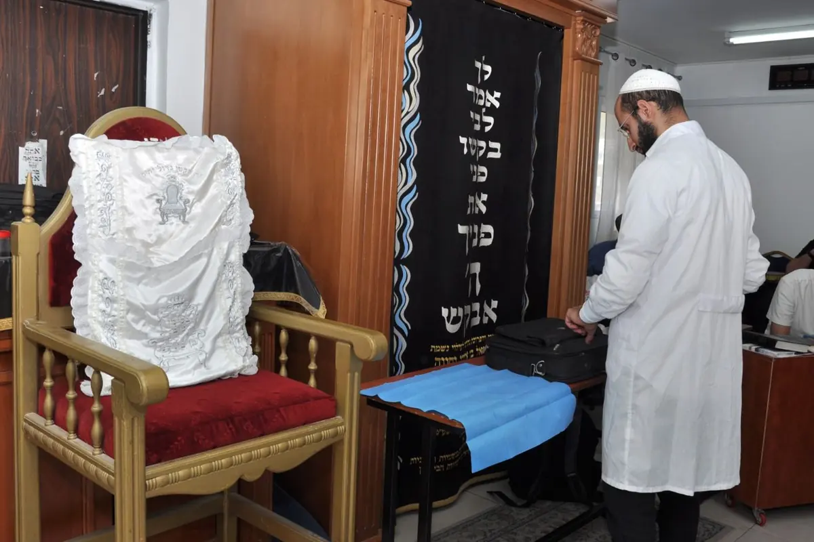
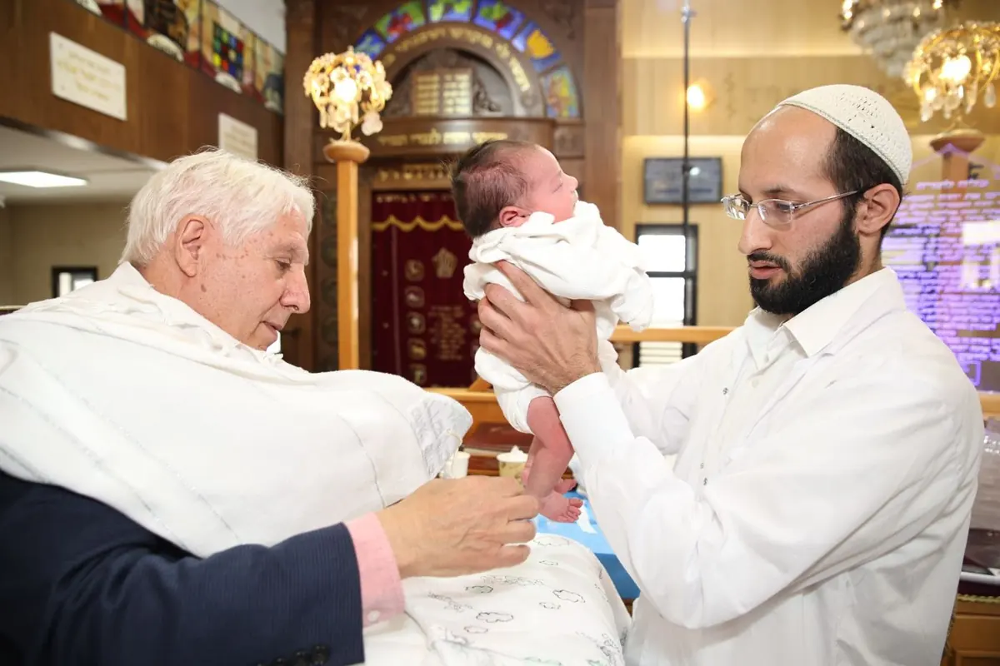
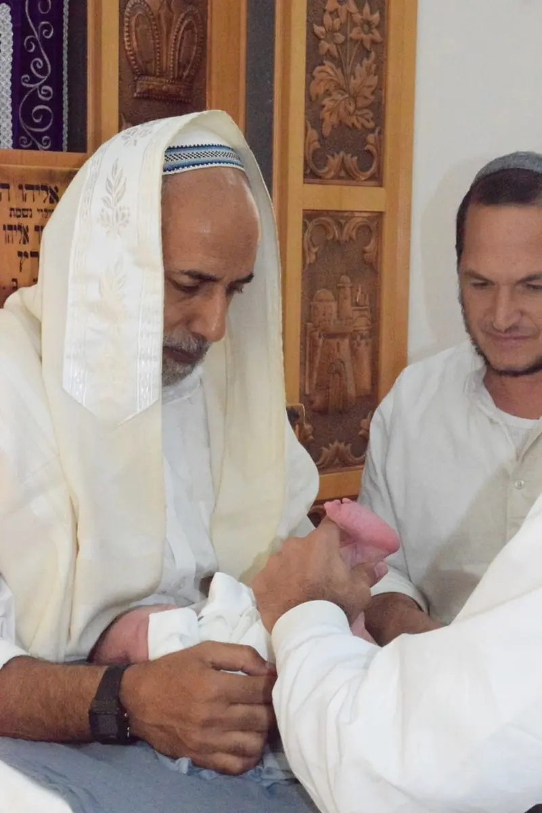
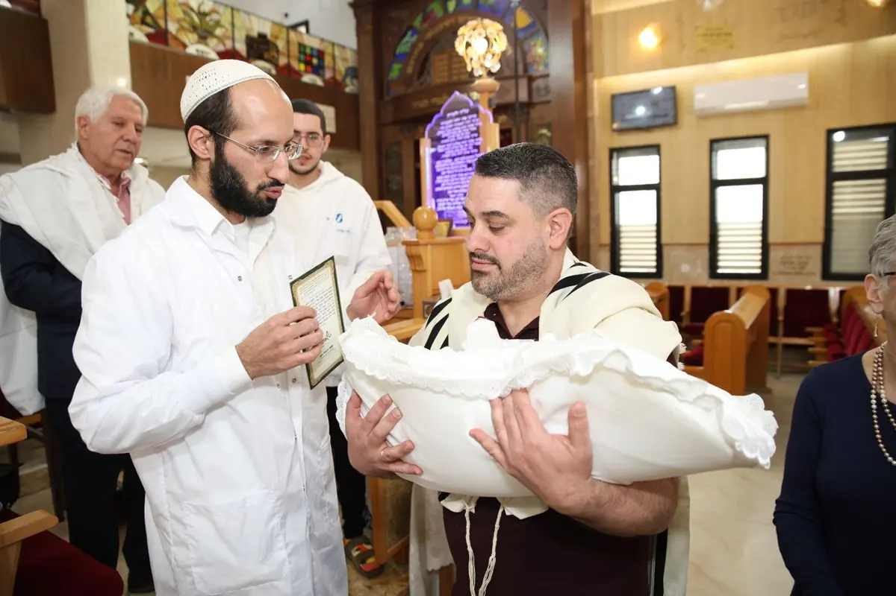
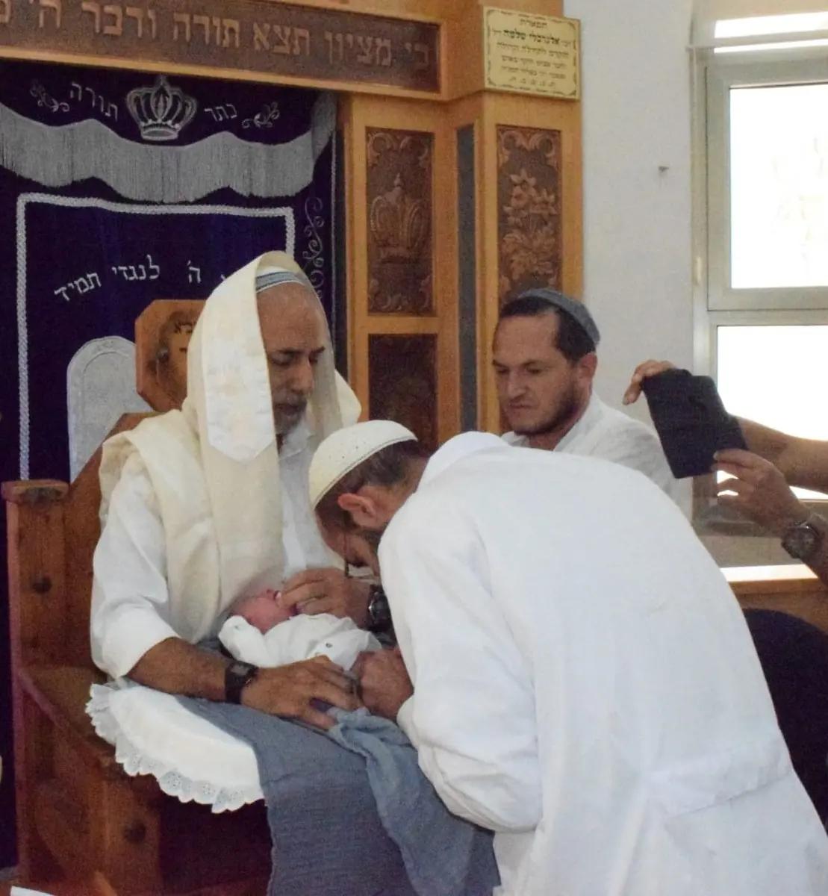
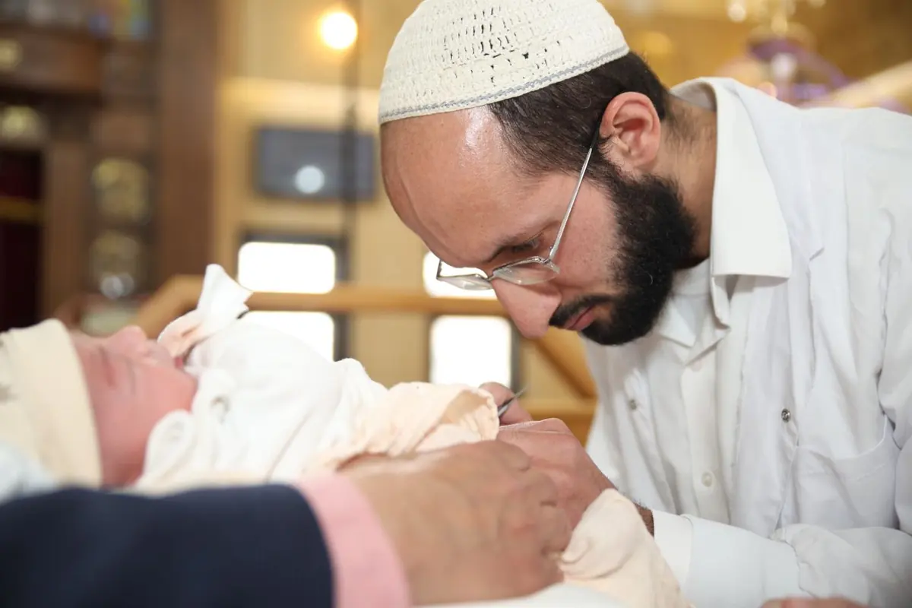

שיחת היכרות
מתקשרים מיד אחרי הלידה. מספרים לי על התינוק ועל הלידה, ומתאמים יחד תאריך, שעה ומיקום, בכל הארץ.
מוהל מוסמך שמלווה אתכם באופן אישי, מהשיחה הראשונה אחרי הלידה ועד הימים שאחרי הברית.זמין עבורכם 24/7, בכל שאלה ובכל שעה.
מוסמך ומאושר
על ידי
נולד לכם בן במזל טוב, והלב מתמלא באושר ובדאגה כאחד.
אתם חולמים על אירוע מושלם, ברית מילה שתהיה בטוחה, מקצועית, מיוחדת ומלאת משמעות. רגע שיחבר את בנכם למסורת של עם ישראל, ויעניק לכם ולמשפחה זיכרון בלתי נשכח לכל החיים.
אך יחד עם החלום, מגיעות החששות. מאחורי ההתרגשות מסתתרת דאגה: האם הכל יעבור בשלום?
אני כאן כדי להקל עליכם.
עם הסמכה מטעם הרבנות הראשית, ברישיון משרד הבריאות, ניסיון של שנים בתחום והכשרה אצל בכירי המוהלים בארץ. בעדינות ובמקצועיות, אני עושה הכל כדי שהרגע הזה יהיה בדיוק כמו שחלמתם: בטוח, מרגש ומשמעותי.
מהטלפון הראשון אחרי הלידה ועד הימים שאחרי. ככה נראה הליווי, בלי הפתעות.
מתקשרים מיד אחרי הלידה. מספרים לי על התינוק ועל הלידה, ומתאמים יחד תאריך, שעה ומיקום, בכל הארץ.
שיחה נוספת על מה להביא ואיך להתכונן, דפי הדרכה מפורטים, ומענה לכל שאלה, גם ברגע האחרון.

אני מגיע לפניכם, מסביר כל שלב, ושומר על אווירה רגועה ובטוחה. הטקס כולו נמשך כ-10 עד 15 דקות.

הוראות טיפול מדויקות ומגנט הדרכה למקרר. זמין בטלפון בכל שעה, ולפי הצורך גם פגישת מעקב.
לא רק הטקס. כל מה שצריך כדי שתרגישו בידיים בטוחות, מהשיחה הראשונה ועד ההחלמה המלאה.
תתקשרו. תמיד. אין שאלה קטנה מדי כשמדובר בתינוק שלכם, ואני כאן בדיוק בשביל זה.
בירושלים והסביבה, ובתיאום בכל הארץ.
אפשרות להביא כרית ברית מהודרת לטקס.
הנחיות מסודרות לפני הברית ומגנט הוראות לאחריה.
באולם, בבית הכנסת או בבית. איפה שנוח לכם.




מחולק לפי ציר הזמן: לפני הברית, ביום הברית, ואחרי. שאלות טכניות וגם רגשיות.
יש לכם שאלה שלא מופיעה כאן?
שאלו אותי ישירותכל שיחה מתחילה בלי התחייבות, רק כדי להכיר ולענות על השאלות שלכם. מומלץ ליצור קשר כבר מיד אחרי הלידה.
054-2233665הרבה מזל טוב, שתזכו לגדל את בנכם בשמחה, בבריאות ובנחת.